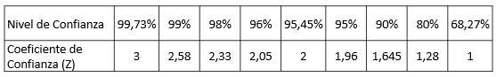

© Derechos Reservados - Esteban Arroyo 2023
Inicio
estebanlab@gmail.com
Cálculo de Tamaños muestrales y muestreo estratificado proporcional
Tamaño Muestral según varianza
Tamaño Muestral según la porporción
Muestreo Estratificado
Calcular el tamaño de una muestra según varianza
Ingrese los valores de los siguientes parámetros
* Niveles y coeficientes de confianza

Para calcular el tamaño de una muestra según la porporción, ingrese los siguientes parámetros
* Niveles y coeficientes de confianza
Ingrese la cantidad de estratos a muestrear
packages = ["https://cdn.holoviz.org/panel/1.3.1/dist/wheels/bokeh-3.3.0-py3-none-any.whl", "https://cdn.holoviz.org/panel/1.3.1/dist/wheels/panel-1.3.1-py3-none-any.whl"]
import io import js from js import document import panel as pn import pandas as pd #import random #from random import sample pn.extension() #Para generar tamaño de muestra según varianza inp_confianza = pn.widgets.FloatInput(name='Ingresa Coeficiente de Confianza*', value=0., step=1e-1, start=0, end=1000, width=100) inp_sd = pn.widgets.FloatInput(name='Ingresa Desviación Típica de la Población', value=0., step=1e-1, start=0, end=1000, width=100) inp_error = pn.widgets.FloatInput(name='Ingresa Error máximo admisible', value=0., step=1e-1, start=0, end=1000, width=100) inp_pob = pn.widgets.IntInput(name='Ingresa Tamaño de la Población', value=0, step=1, start=0, end=100000, width=100) button_upload = pn.widgets.Button(name='Calcular', button_type='primary', width=100) col = pn.Column(inp_confianza, inp_sd, inp_error, inp_pob, button_upload).servable(target='parametros') def cal_muestra(*ags, **kws): if inp_confianza is not None: document.getElementById('salida').innerHTML="" z = inp_confianza.value s = inp_sd.value d = inp_error.value N = inp_pob.value n1 = (z*s/d)**2 #Tamaño de la Muestra if (N == 0): pn.Column("### El tamaño de muestra es:", n1).servable(target='salida') else: n = n1/(1+(n1/N)) #Tamaño de la Muestra aplicando la corrección para poblaciones finitas pn.Column("### El tamaño de muestra es:", n).servable(target='salida') button_upload.on_click(cal_muestra) #Para generar cantidad de estratos inp_estra = pn.widgets.IntInput(name='Estratos', value=0, step=1, start=0, end=10000) button_cargar = pn.widgets.Button(name='Procesar', button_type='primary', width=100) pn.Column(inp_estra, button_cargar, height=100).servable(target="ingreso") #Para calcular muestreo por estratos inp_muestra = pn.widgets.IntInput(name='Ingrese el tamaño muestra', value=0, step=1, start=0, end=10000, width=100) button_cal = pn.widgets.Button(name='Calcular', button_type='primary', width=100) col_mues = pn.Column('### Ingrese el Tamaño de la muestra', inp_muestra, button_cal) def n_estratos(*ags, **kws): n = 1 while n <= inp_estra.value: globals()["estra%s" % n]= pn.widgets.IntInput(name='Tamaño estrato %s'% n, value=0, step=1, start=0, end=10000, width=100) pn.Row(globals()["estra%s" % n]).servable(target='estratos') n +=1 col_mues.servable(target='muestra') button_cal.on_click(on_btn_click) button_cargar.on_click(n_estratos) def on_btn_click(*ags, **kws): document.getElementById('muestras').innerHTML="" df = pd.DataFrame() #Definimos un dataframe vacio estratos_n=[] #Se cargan los estratos proporciones=[] #Se cargan las porporciones estra_prop = [] #Se cargan los nuevos tamaños cada estrato suma=0 n = 1 while n <= inp_estra.value: estratos_n.append(globals()["estra%s" % n].value) n +=1 for i in estratos_n: suma += i for i in estratos_n: proporciones.append(i/suma) #pyscript.write('muestras', proporciones) for i in proporciones: estra_prop.append(i * inp_muestra.value) df['Poblacion'] = estratos_n df['Propocion'] = proporciones df['Muestra'] = estra_prop df_pane = pn.pane.DataFrame(df, col_space=80, width=800, justify='left', index=False) pn.Column("## Muestreo estratificado porporcional", df_pane).servable(target='muestras') #Para generar tamaño de muestra según proporción inp_confian = pn.widgets.FloatInput(name='Ingresa Coeficiente de Confianza*', value=0., step=1e-1, start=0, end=1000, width=100) inp_prop = pn.widgets.FloatInput(name='Ingresa la porporción poblacional', value=0., step=1e-1, start=0, end=1000, width=100) inp_error2 = pn.widgets.FloatInput(name='Ingresa Error máximo admisible', value=0., step=1e-1, start=0, end=1000, width=100) inp_pobla = pn.widgets.IntInput(name='Ingresa Tamaño de la Población', value=0, step=1, start=0, end=100000, width=100) button_upload2 = pn.widgets.Button(name='Calcular', button_type='primary', width=100) col = pn.Column(inp_confian, inp_prop, inp_error2, inp_pobla, button_upload2).servable(target='valores') def cal_muestra2(*ags, **kws): if inp_confian is not None: document.getElementById('salida2').innerHTML="" z = inp_confian.value p = inp_prop.value q = 1 - p e = inp_error2.value N = inp_pobla.value n1 = ((z**2)*p*q)/(e**2) #Tamaño de la Muestra if (N == 0): pn.Column("### El tamaño de muestra es:", n1).servable(target='salida2') else: n = n1/(1+(n1/N)) #Tamaño de la Muestra aplicando la corrección para poblaciones finitas pn.Column("### El tamaño de muestra es:", n).servable(target='salida2') button_upload2.on_click(cal_muestra2)